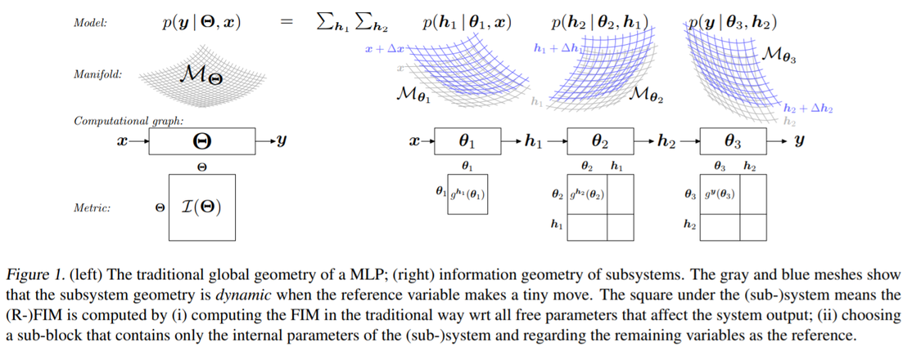

Relative Fisher Information and Natural Gradient for Learning Large Modular Models
by Ke Sun and Frank Nielsen
- Relative Fisher Information and Natural Gradient for Learning Large Modular Models (ICML'17)
- Slides (ICML'17)
- Relative Natural Gradient for Learning Large Complex Models (arXiv)
- source code (Python)
- poster presentation
Fisher information and natural gradient provided deep insights and powerful tools to artificial neural networks.
However related analysis becomes more and more difficult as the learner's structure turns large and complex. This paper makes a preliminary step towards a new direction. We extract a local component of a large neuron system, and defines its relative Fisher information metric that describes accurately this small component, and is invariant to the other parts of the system. This concept is important because the geometry structure is much simplified and it can be easily applied to guide the learning of neural networks. We provide an analysis on a list of commonly used components, and demonstrate how to use this concept to further improve optimization.

Last updated, September 2017.